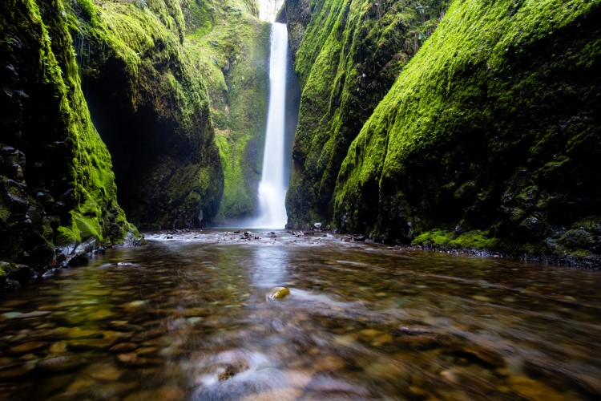

HENNESY
.

FOREST
This photo of the jungle was deep in the Central Republic of Africa. It portrays a hot and wet climate where the environment is majorly made up green indeginous trees.


Home
WATERFALL
This is a photo of a water taken during a nature walk deep in the forest. The river waters fglow from far up the the mountains feeding the major rivers in the forest.
ANTELOPE
The antelope well known as "swara" among the swahili is majorly found in the savannah. This photo shows one that is staring far in the savannah during the sunset in the Serengeti.
Home